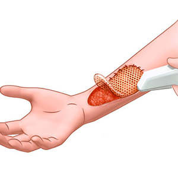

Reconstrução da pele
Três novos campos de pesquisa, combinados, abrem infinitas possibilidades para a área da saúde. São eles
a nanotecnologia, que trabalha com a dimensão de bilionésimos do metro; os fotoprocessos, modulados pela
luz; e a engenharia tecidual, que objetiva restabelecer a integridade dos tecidos do corpo. É possível o
transplante da pele crescida em laboratório a partir desses processos, que poderá beneficiar pacientes
com queimaduras, doenças cicatriciais ou cutâneas.
Podem ser usadas células de um banco de células ou até mesmo do próprio paciente para crescer essa pele.
A pele é logo tratada por medicamentos nanoestruturados ativados por laser, que ajudam a diminuir a
rejeição do corpo, aceleraram a cicatrização e facilitam a reconstituição do tecido.
Medicamentos nanoestruturados ativados por laser também têm sido testados pela equipe de Tedesco em 2010
para o tratamento de câncer de pele. Os resultados têm se mostrado bastante satisfatórios – no
tratamento de câncer de pele do tipo não melanoma, dentre os mais de 600 pacientes já atendidos, o
índice de cura chega a 98% na primeira aplicação do medicamento e a 100% na segunda.
Em particular, as nanoparticulas com adição de prata ajudam muito nesses processos, já que as capacidades
antibacterianas da prata diminuem a chance da pele infeccionar, e agem como desinfetante, além de
regenerar a pele mais rapidamente.

Feridas de diabéticos
Pacientes diabéticos tem um processo de cicatrização alterado, logo métodos de ajudar essa cicatrização
pelo uso de tecnologia são bem vindos.
A nanotecnologia logo pode trazer uma solução de custo acessível e com maior praticidade para os
diabéticos sofrendo de lesões, usando métodos que misturam nanotecnologia, fotoprocessos e engenharia
tecidual, como no exemplo da reconstrução da pele.